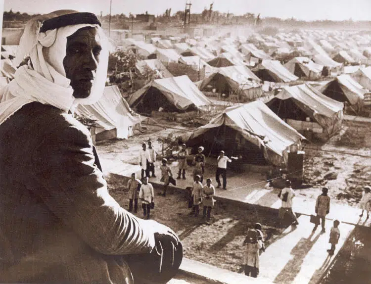
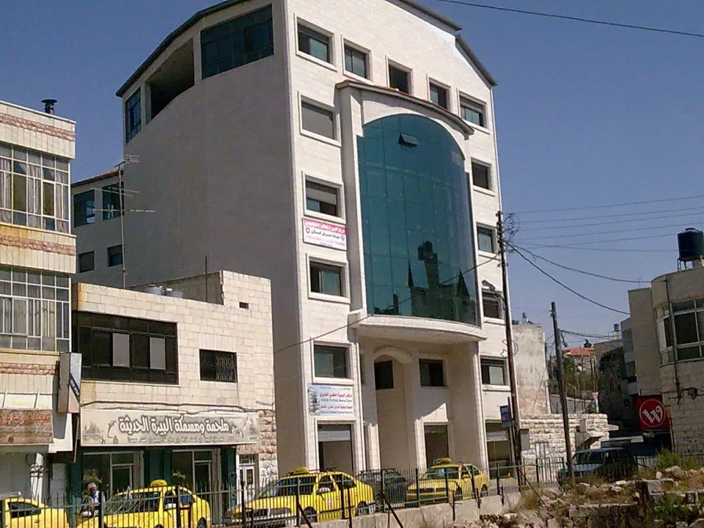
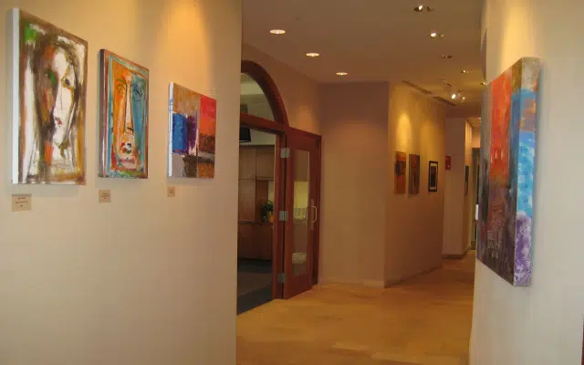

What We Do
Our team actively engages with policymakers to influence constructive dialogue and favorable legislation that impacts Palestinian rights and development.

Education
The Palestine Centercomprises our educational programs. They give voice to the Palestinian narrative through policy briefings, lecture series, conferences, symposia, scholarly research publications and an extensive research library. The Palestine Center’s analysis emphasizes.
Learn more
Community Development
The Humanitarian Linkprogram extends grants to hospitals, orphanages, clinics, schools, universities and civil society organizations in the Occupied Territory and surrounding refugee camps in an effort to sustain the basic conditions of life in Palestine and to overcome the burdens of occupation

Culture
Gallery Al-Qudsthe cultural program of the Jerusalem Fund, showcases the rich culture and national heritage of the Palestinian people, as well as that of surrounding Arab societies. The Gallery hosts bi-monthly exhibits of fine art and/or photography, an annual juried art competition
Learn more